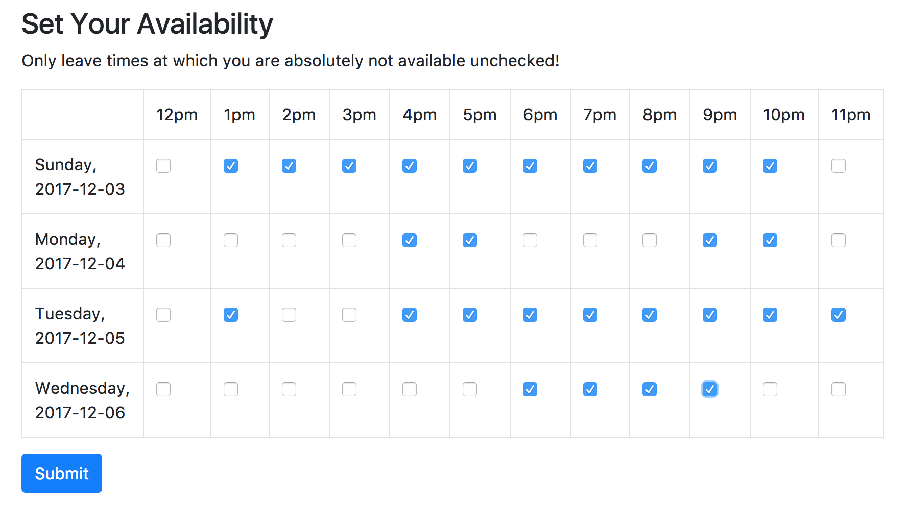
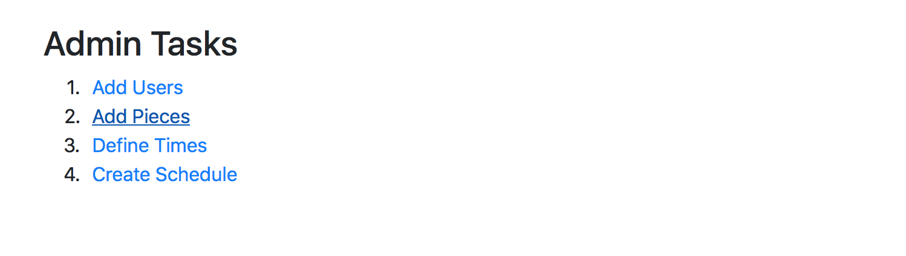

After logging in, simply check the boxes for all the times when you are available. Remember, only leave boxes unchecked for when you are absolutely not free!
After pressing "Submit", you can view your updated availability under "Your Availability".
After logging in, you will see the Admin dashboard.  In order to allows users to add their availability, you must first: